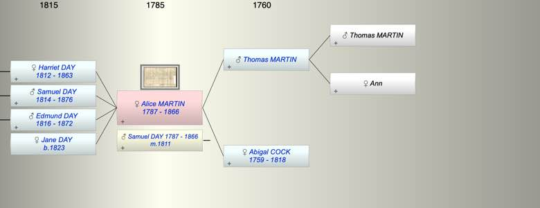
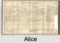

| [Index] |
| Alice MARTIN (1787 - 1866) |
|  |
|  |
| b. 1787 at Hornblotton, Somerset |
| m. 22 Apr 1811 Samuel DAY (1787 - 1866) at Hornblotton, Somerset |
| d. 1866 at Hornblotton aged 79 |
| Near Relatives of Alice MARTIN (1787 - 1866) | ||||||
| Relationship | Person | Born | Birth Place | Died | Death Place | Age |
| Grandfather | Thomas MARTIN | |||||
| Grandmother | Ann | |||||
| Father in Law | Thomas DAY | 1756 | Est | 1831 | Ditcheat, Somerset | 75 |
| Mother in Law | Ann HOSKINS | 1757 | Est | 1841 | Ditcheat, Somerset | 84 |
| Father | Thomas MARTIN | |||||
| Mother | Abigal COCK | 1759 | 1818 | Hornblotton | 59 | |
| Self | Alice MARTIN | 1787 | Hornblotton, Somerset | 1866 | Hornblotton | 79 |
| Husband | Samuel DAY | 11 May 1787 | Ditcheat, Somerset | 1866 | Hornblotton | 79 |
| Daughter | Harriet DAY | 17 Oct 1812 | Ditcheat, Somerset | 24 Sep 1863 | 50 | |
| Son | Samuel DAY | 1814 | Ditcheat, Somerset | 24 Sep 1876 | Walpole Haldimand Ontario Canada | 62 |
| Son | Edmund DAY | 1816 | Ditcheat, Somerset | 1872 | 56 | |
| Daughter | Jane DAY | 1823 | Ditcheat, Somerset | |||
| Son in Law | James BREWER | 1807 | Exminster | 11 Apr 1881 | 4 Victoria Cottages, Parr St Exeter | 74 |
| Daughter in Law | Sarah FLAG | 30 Jun 1811 | Ditcheat, Somerset | |||
| Daughter in Law | Lydia BOYCE | 1818 | East Pennard | |||
| Grandson | James BREWER | 23 Oct 1842 | Alphington | 1885 | Alphington | 43 |
| Granddaughter | Amelia BREWER | 27 Oct 1846 | 05 Nov 1871 | 25 | ||
| Grandson | Samuel BREWER | 1848 | Alphington | 1901 | Alphington | 53 |
| Granddaughter | Charlotte BREWER | 26 Jul 1851 | Alphington | 1940 | Pinhoe | 89 |
| Granddaughter | Jane BREWER | 03 Dec 1854 | Alphington | Y | ||
| Grandson | William BREWER | 03 Dec 1854 | Alphington | 07 Aug 1912 | 57 | |
| Grandson | Jacob DAY | 1839 | Ditcheat, Somerset | 24 Jul 1930 | Canada | 91 |
| Granddaughter | Harriett DAY | 1841 | Ditcheat, Somerset | |||
| Grandson | Samuel DAY | abt 1843 | Walpole Haldimand Ontario Canada | |||
| Grandson | William DAY | 1840 | ||||
| Granddaughter | Jane DAY | 1842 | ||||
| Granddaughter | Amelia DAY | 1843 | ||||
| Granddaughter | Elizabeth DAY | 1847 | ||||
| Granddaughter | Ellen DAY | 1849 | Hornblotton | |||
| Grandson | Mark DAY | 1854 | Hornblotton | |||
| Granddaughter | Emily Mary DAY | 1860 | Hornblotton | |||
| Nephew | James Dredge DAY | 1815 | Ditcheat, Somerset | 1851 | Ditcheat, Somerset | 36 |
| Nephew | William DAY | 1817 | Ditcheat, Somerset | |||
| Niece | Henrietta DAY | 17 Jun 1819 | Ditcheat, Somerset | 1843 | Ditcheat, Somerset | 24 |
| Nephew | John DAY | 1822 | Ditcheat, Somerset | |||
| Niece | Mary DAY | 1824 | Ditcheat, Somerset | 1877 | Ditcheat, Somerset | 53 |
| Nephew | Charles DAY | 1826 | Ditcheat, Somerset | 1847 | Ditcheat, Somerset | 21 |
| Nephew | George DAY | 1828 | Ditcheat, Somerset | 1828 | Ditcheat, Somerset | 0 |
| Niece | Anna DAY | 1830 | Ditcheat, Somerset | |||
| Niece | Martha DAY | 1830 | Ditcheat, Somerset | |||
| Nephew | George DAY | 1833 | Ditcheat, Somerset | |||
| Nephew | Joseph DAY | 1836 | Ditcheat, Somerset | |||
| Sister in Law | Jane DAY | 07 Apr 1785 | Ditcheat, Somerset | |||
| Brother in Law | William DAY | 17 Jan 1789 | Ditcheat, Somerset | 1874 | 85 | |
| Events in Alice MARTIN (1787 - 1866)'s life | |||||
| Date | Age | Event | Place | Notes | Src |
| 1787 | Alice MARTIN was born | Hornblotton, Somerset | Note 1 | ||
| 22 Apr 1811 | 24 | Married Samuel DAY (aged 23) | Hornblotton, Somerset | Note 2 | |
| 17 Oct 1812 | 25 | Birth of daughter Harriet DAY | Ditcheat, Somerset | Note 3 | |
| 1814 | 27 | Birth of son Samuel DAY | Ditcheat, Somerset | Note 4 | |
| 1816 | 29 | Birth of son Edmund DAY | Ditcheat, Somerset | Note 5 | |
| 1818 | 31 | Death of mother Abigal COCK (aged 59) | Hornblotton | Note 6 | |
| 1823 | 36 | Birth of daughter Jane DAY | Ditcheat, Somerset | Note 7 | |
| 24 Sep 1863 | 76 | Death of daughter Harriet DAY (aged 50) | |||
| 1866 | 79 | Alice MARTIN died | Hornblotton | Note 8 | |
| 1866 | 79 | Death of husband Samuel DAY (aged 79) | Hornblotton | Note 9 | |
| Created on a Mac™ using iFamily for Mac™ on 15 Sep 2023 |